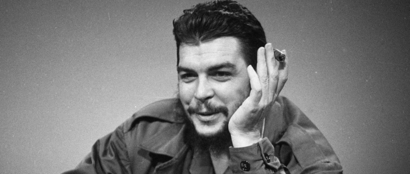
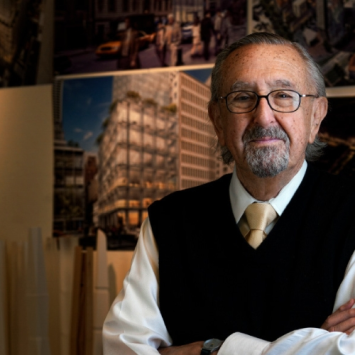
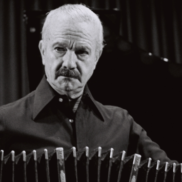
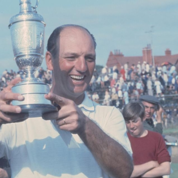

Famosos
- Roberto De Vicenzo:Roberto De Vicenzo fue un golfista profesional argentino. Nació en Villa Ballester, Provincia de Buenos Aires, Argentina el 14 de abril de 1923 y falleció en la Ciudad de Ranelagh, Argentina, el 1 de junio de 2017.
- Astor Piazzolla:Astor Pantaleon Piazzolla nació el 11 de marzo de 1921 en la ciudad de Mar del Plata, Provincia de Buenos Aires, Argentina, y fue un bandoneonista y compositor considerado uno de los músicos más importantes del siglo 20 y uno de los compositores más importantes de tango en todo el mundo.
- César Pelli:César Pelli nació en San Miguel de Tucumán, Argentina, el 12 de octubre de 1926. Estudió arquitectura en la Universidad Nacional de Tucumán, graduándose en 1948, y luego en 1954, en la Escuela de Arquitectura de la Universidad de Illinois, obtuvo un Máster en Ciencias de la Arquitectura.
- Ernesto «Che» Guevara:Ernesto «Che» Guevara nació en la ciudad de Rosario, Provincia de Santa Fe, Argentina el 14 de junio de 1928 y fue un médico, político, guerrillero, escritor, periodista y revolucionario comunista argentino nacionalizado cubano.



